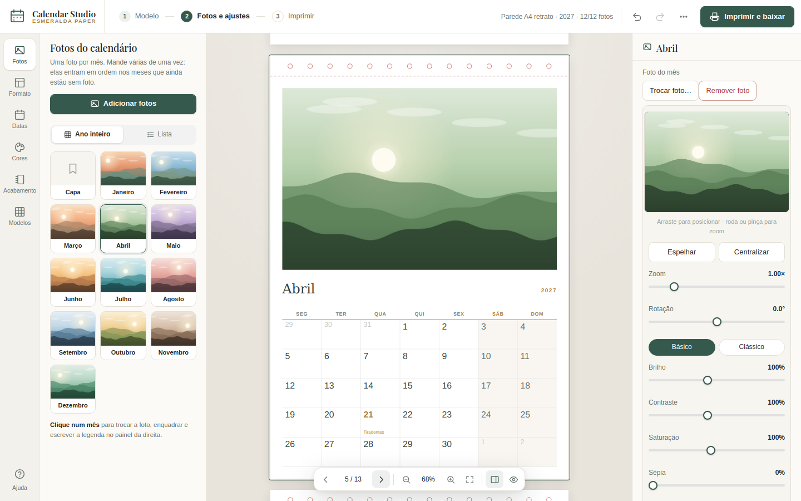
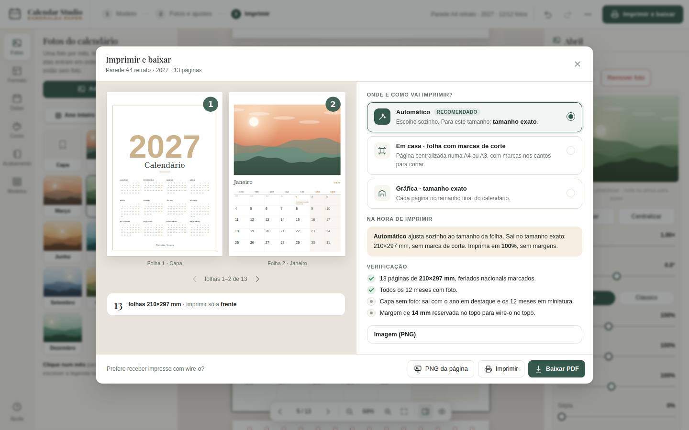

1. O que é
O Calendar Studio monta um calendário personalizado — de parede, quadrado ou de mesa — com suas fotos, os feriados do Brasil e seus próprios eventos, e exporta um PDF vetorial pronto para impressão.
100% no seu navegador. Nada é enviado a nenhum servidor. Funciona offline.
O calendário é sempre uma capa (opcional) + 12 páginas de mês. A aba Fotos, no painel esquerdo, mostra o ano inteiro em miniatura — clique num mês para vê-lo no centro e trocar a foto, enquadrar e escrever a legenda no painel à direita.
A tela em 3 passos
A barra de cima mostra o caminho: 1 Modelo → 2 Fotos e ajustes → 3 Imprimir. À esquerda ficam as abas Fotos, Formato (tamanho e estilo do mês), Datas (ano, feriados, aniversários), Cores, Acabamento (wire-o, espiral) e Modelos. O botão verde Imprimir e baixar abre a prévia da folha e o PDF.

2. Modelos prontos
A tela inicial (e a aba Modelos) tem 8 pontos de partida, com miniaturas que mostram a capa e um mês de verdade — cada um ajusta tamanho, estilo, paleta e encadernação de um só golpe: Parede minimalista, Parede com fotos (já vem com wire-o no topo), Pôster A3, Quadrado para redes, Mesa executiva (wire-o lateral), Mesa cavalete (dobra sozinha, fica de pé), Ímã de geladeira e Preto e branco editorial.
Aplicar um modelo não apaga fotos e legendas que você já colocou — só ajusta tamanho/estilo/paleta/encadernação. Dá pra experimentar à vontade.
3. Tamanho e estilo das páginas
Em Documento → Tamanho e estilo escolha o formato: parede A4 ou A3 (retrato), parede A4 paisagem, quadrado (formato clássico de calendário de foto), mesa A6 paisagem, ímã de geladeira (bem pequeno) ou mesa cavalete (dobra em 2 e fica de pé sozinha — ver seção 8).
Cada mês pode usar um de 6 estilos:
O toggle Incluir capa liga/desliga a página de capa (título, nome e foto).
4. Ano, feriados e eventos
Começa em define o primeiro mês: escolha Agosto para um calendário de ano letivo (ago–jul) — cada mês usa o ano certo e os feriados dos dois anos. Ligue Fases da lua (calculadas para o horário de Brasília, como vistas do hemisfério sul) e Número da semana (ISO 8601) se quiser. Eventos recorrentes: escreva toda segunda Aula de inglês ou todo dia 5 Aluguel.
Em Documento → Ano e datas especiais: escolha o ano e se a semana começa na segunda ou no domingo.
- Feriados nacionais — fixos (Ano Novo, Tiradentes…) e móveis (Sexta-feira Santa, Páscoa), calculados no próprio aparelho.
- Pontos facultativos — Carnaval, Quarta-feira de Cinzas, Corpus Christi.
- Datas comemorativas — Dia das Mães, dos Pais, Black Friday etc.
- Feriados estaduais — escolha a UF (opcional).
- Eventos próprios — um por linha:
2026-03-15 Prova(data fixa) ou20/09 Aniversário da loja(repete todo ano).
As marcações aparecem no dia certo, em cada página de mês, na cor de destaque.
5. Fotos — capa e meses (com editor)
Clique num mês na aba Fotos (ou na própria página, no centro) para selecioná-lo. Para pôr todas as fotos de uma vez, use Adicionar fotos e escolha várias: elas entram em ordem nos meses que ainda estão sem foto (a 13ª vai para a capa). O painel à direita muda para os campos daquela página — Capa (título, nome, foto) ou Mês (foto, legenda).
Ao tocar em Escolher foto…, depois de escolher o arquivo abre um editor — o mesmo espírito do Polaroide Studio: arraste a foto pra posicionar, dê zoom (roda do mouse, pinça no celular ou o controle deslizante), ajuste rotação, espelhe e afine brilho/contraste/saturação/sépia/preto-e-branco. O quadro do editor já mostra exatamente a proporção da área onde a foto vai entrar. Toque em Aplicar pra confirmar.
Depois de ajustada, o botão Reenquadrar reabre o editor no mesmo ponto de onde parou — dá pra afinar quantas vezes quiser sem perder qualidade (a foto original fica guardada à parte).
- Um par de dedos (ou Ctrl/⌘ + roda) dá zoom apontando onde você tocou/passou o mouse.
- {mes} e {ano} funcionam na legenda do mês, por exemplo "Praia em {mes}".
Sua foto não sai do aparelho. Ao escolher um arquivo, ele é redesenhado num canvas interno (isso já remove EXIF/GPS) antes mesmo de abrir o editor; o recorte final também é assado localmente ao aplicar.
Se o estilo do mês não usa foto (Só a grade) ou você não escolheu uma, a página sai só com a grade — sem espaços em branco estranhos no PDF.
6. Editar direto na folha
Clicar na própria página é o caminho mais curto para mexer em qualquer coisa — é a mesma forma de editar do Planner Studio e do Polaroide Studio.
- Um clique marca o título, o ano, o nome, o nome do mês, a legenda, um enfeite ou a foto, e abre a barra de ferramentas. Arraste para mover; as bolinhas dos cantos mudam o tamanho.
- Clique de novo num texto (ou dê dois cliques) para escrever ali mesmo.
- Clique numa parte vazia da página para abrir a barra Adicionar: texto, ilustração do catálogo, imagem (logo, adesivo), foto, fundo ou marca d'água.
Nos meses, a posição e o estilo do nome do mês, do ano e da legenda valem para os doze — é o que mantém o calendário uniforme. Já os textos e ilustrações que você adiciona ficam só naquela página: dá para pôr uma árvore em dezembro e um coração em junho sem afetar o resto.
O que a barra oferece
- Texto — Editar, Fonte, Tamanho, Cor, Negrito, Itálico, Alinhar, Efeitos, Ajustes, duplicar e ocultar/excluir.
- Efeitos — doze estilos prontos (Sombra, Elevado, Contorno, Vazado, Etiqueta, Pílula, Marca-texto, Retrô, Neon, Carimbo, Espaçado, Elegante) e o ajuste fino de contorno (cor, espessura, vazado), fundo atrás do texto (cor, opacidade, folga, cantos) e sombra (cor, distância, opacidade).
- Ajustes — transparência, girar, espaço entre letras, altura da linha, caixa alta, centralizar, para frente / para trás e Restaurar.
- Foto — o enquadramento acontece na própria página: arraste para posicionar, use a pinça ou a roda para o zoom e ajuste brilho e filtros vendo o resultado na folha.
A capa tem oito estilos — clássica, foto inteira, foto em cima, mínima, cor sólida e três com nome (caligrafia, coroa de folhas e boho) —, escolhidos em Formato. Para voltar ao layout original de todos os textos, use Restaurar posições e estilos dos textos, nos ajustes.
Contorno, fundo, sombra e giro são desenhados como vetor: saem iguais — e nítidos — no PDF. Atalhos: setas movem, Enter escreve, Ctrl+D duplica, Del exclui, Esc sai.
Montar passo a passo: na tela inicial, o assistente passa por tamanho, estilo do mês, capa (nome e estilo), cores, datas e feriados do seu estado e encadernação, sempre com a página real desenhada em cada opção.
7. Cores, fundo e marca d'água
Na aba Estilo, escolha uma das 7 paletas prontas (Esmeralda, Grafite, Marinho, Ameixa, Floresta, Sépia, Preto e branco) ou personalize a tinta, a cor de destaque e o fundo do papel. Tinta pinta textos e grade; destaque, os feriados e os títulos.
Fundo das páginas
No mesmo painel — ou clicando numa parte vazia da página e escolhendo Fundo:
- Papel — sem fundo, só a cor do papel.
- Cor lisa.
- Degradê de duas cores, em linha ou saindo do centro, com combinações prontas (Areia, Pêssego, Rosé, Lavanda, Céu, Menta, Pôr do sol, Floresta, Noite, Dourado).
- Estampa — poá, quadriculado, pontilhado, pautado, listras, diagonal, xadrez, corações, estrelas, confete, ondas, zigue-zague, triângulos, círculos, escamas ou uma ilustração do catálogo repetida, com cor, tamanho e espessura próprios.
- Foto cobrindo a página, com um controle de clarear para o texto continuar legível.
Abrindo o fundo pela página, dá para aplicar no calendário todo, só na capa ou só naquele mês — útil para dar um tom diferente a cada estação.
Marca d'água
Sete estilos: texto (cheio ou só o contorno das letras), selo redondo, carimbo, faixa atravessando a página, borda de texto correndo pelos quatro lados, ilustração do catálogo ou uma imagem sua — o logo da empresa, por exemplo. Escolha a posição (centro, topo, embaixo, os quatro cantos, repetida ou miúda) e ajuste transparência, tamanho, giro, fonte e cor; a opção Também na capa decide se ela aparece lá.
Acabamento
Na aba Acabamento, escolha a gramatura e o tipo de papel — o painel mostra uma estimativa de espessura da pilha e do diâmetro de anel wire-o ou espiral, para levar à gráfica. É só estimativa: confira com o papel real antes de comprar o anel.
8. Encadernação — wire-o, espiral e mesa cavalete
O seletor Encadernação (na mesma aba Acabamento) reserva espaço de verdade na página — nada de foto, grade ou texto entra na faixa onde o furo vai ser feito:
- Wire-o no topo — pra pendurar na parede; reserva uma faixa no alto de cada página.
- Wire-o lateral — pra folhear como um bloco de mesa; reserva uma faixa na lateral esquerda.
- Espiral no topo — igual ao wire-o no topo, com furos mais próximos.
- Grampo de canto — não reserva faixa nem mostra furo; um lembrete de que você vai grampear o canto na gráfica.
Ligue Mostrar guia de furo pra ver os pontinhos na tela (não entram no PDF a menos que você ligue Imprimir a guia de furo no PDF também).
Mesa cavalete é um tamanho, não uma encadernação: ao escolhê-lo, o PDF exportado sai automaticamente com o dobro da altura — a página normal em cima, um painel de apoio liso embaixo, e uma linha de dobra tracejada no meio. Dobre ao meio e cole a base: o calendário fica de pé sozinho, sem precisar de suporte. Esse tamanho não combina com "1 por folha + corte" (a montagem fica travada em "Tamanho real").
9. Exportar e imprimir
Clique em Imprimir e baixar (ou Ctrl+P): a janela mostra a prévia de cada folha como vai sair, quantas folhas são e uma verificação antes de imprimir — meses sem foto, fotos com resolução baixa para o tamanho, margem do wire-o. Por padrão a montagem é Automático: se o tamanho do calendário cabe numa folha A4 mas não é uma A4 inteira (o quadrado, o ímã, a mesa…), o PDF centraliza a página numa A4 com marcas de corte nos 4 cantos; se já é uma A4 (parede A4 retrato/paisagem) ou é maior que A4 (o pôster A3), sai no tamanho exato, sem precisar cortar. Não precisa configurar nada — só clicar. Nos cartões Onde e como vai imprimir? dá pra trocar pra um modo manual se precisar (ex.: mandar pra gráfica no tamanho exato mesmo sendo menor que A4):
| Montagem | Quando usar |
|---|---|
| Automático (padrão) | decide sozinho entre os dois de baixo, conforme o tamanho escolhido. |
| Tamanho real | a página sai exatamente no tamanho do calendário, sem marca de corte — para levar à gráfica. |
| 1 por folha + corte | centraliza a página numa folha A4/A3 comum com marcas de corte nos 4 cantos. |
Arquivo para a gráfica: em Arquivo para → Gráfica (CMYK) o PDF sai em PDF/X-4: fotos e cores em CMYK pelo perfil FOGRA39, fontes incorporadas e caixas de corte e sangria. Em Opções para gráfica e imagem, use 3 mm de sangria: fotos e fundos que vão até a borda passam do corte e não sobra filete branco; as marcas de corte ficam fora da sangria. Ali também ficam a economia de tinta e a folha de calibração (régua de 100 mm, margem mínima da impressora e escala de cinza).
12 meses em poucas folhas: escolha em Tamanho o Pôster anual (A3 ou A2, um ano numa folha), o Econômico A4 (6 meses por página) ou o Bolso (cartão 54 × 86 mm, frente e verso, 10 cartões por A4 com marcas de corte compartilhadas). A mesa cavalete sai com o verso girado: dobrada em tenda, as duas faces ficam de pé.
PNG da página exporta só a página atual como imagem (resolução em Imagem (PNG), na mesma janela). Imprimir monta um documento de impressão dedicado com a mesma montagem do PDF — deixe a escala em 100% e as margens em Nenhuma na caixa de diálogo do navegador.

10. Meus projetos e arquivos
O calendário é guardado neste navegador automaticamente enquanto você trabalha (as fotos vão para a área privada do navegador, não para o arquivo). Para não depender só disso, há duas formas de salvar:
Meus projetos (neste computador)
Menu ⋯ → Meus projetos (ou Ctrl+S) guarda uma cópia completa — fotos, legendas, cores, fundo — dentro do próprio navegador, com nome e miniatura. Nada é enviado para a internet.
- Os projetos aparecem na tela inicial, em Seus projetos neste computador: um clique reabre.
- Em cada um, o menu ⋯ permite abrir, renomear, duplicar, baixar o arquivo ou apagar.
- Com Atualizar sozinho o projeto aberto ligado, as alterações vão para o projeto salvo alguns segundos depois.
Arquivo do projeto (.json)
Baixar arquivo do projeto (.json) gera um arquivo com tudo dentro — é o backup e o
jeito de continuar em outro computador. Abrir arquivo de projeto… carrega esse arquivo
de volta (também funciona arrastando o .json para a janela).
Salvar predefinição (só ajustes), no mesmo menu, guarda tamanho, estilo, cores, encadernação e saída sem título, fotos nem eventos — para reaplicar em outro calendário.
Limpar os dados do navegador apaga o calendário automático e o Meus
projetos junto. O .json é o único que fica fora do navegador.
11. Perguntas frequentes
Minhas fotos ficam salvas em algum servidor?
Não. Tudo — inclusive as fotos — fica só no armazenamento local deste navegador, neste aparelho. A ferramenta não tem servidor: a Content-Security-Policy do próprio site bloqueia qualquer tentativa de envio de dados.
Posso usar o mesmo calendário em anos diferentes?
Sim — troque o campo Ano em "Ano e datas especiais". Os feriados e a grade de dias são recalculados na hora; fotos e legendas continuam as mesmas.
Por que a foto não fica exatamente como eu vi no editor?
O quadro do editor já usa a proporção exata da área de destino — o que aparece ali é assado (recortado) numa imagem final e é isso que entra no PDF, sem surpresas. Se algo saiu diferente, reabra com Reenquadrar e ajuste de novo.
O quadrado (210×210 mm) é um tamanho de papel comum?
Não — é cortado de uma folha maior. Use a montagem "1 por folha + corte" (A4 ou A3) para imprimir com marcas de corte nos 4 cantos.
Escolhi wire-o mas a grade ainda parece perto do topo — tem algo errado?
Provavelmente não: a faixa reservada (14 mm por padrão) é proporcional ao tamanho da página, então num formato pequeno ela ocupa uma fatia visualmente maior. Ligue Mostrar guia de furo pra confirmar onde a faixa termina.
Como monto a mesa cavalete depois de imprimir?
Corte a folha no tamanho impresso, dobre exatamente na linha tracejada do meio e cole (ou use fita dupla-face) o painel de apoio na parte de trás da base, formando um "L" invertido que segura o calendário em pé.